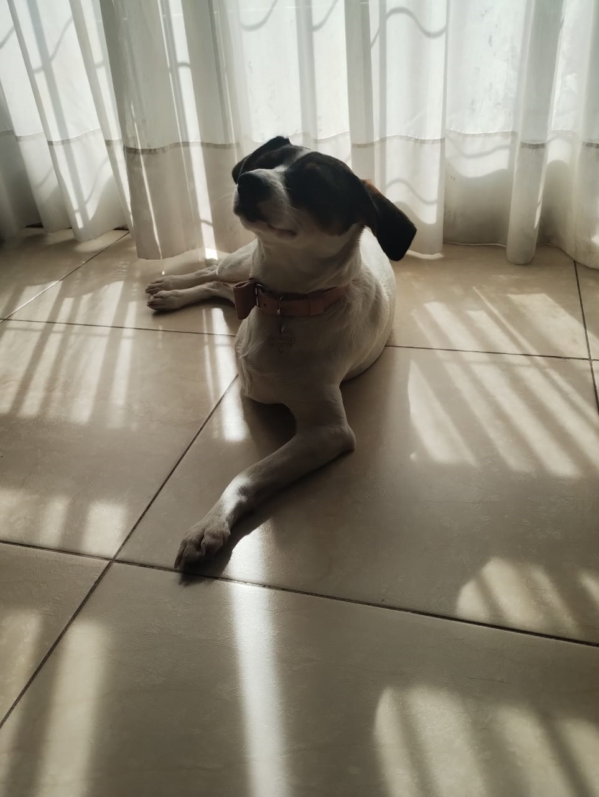
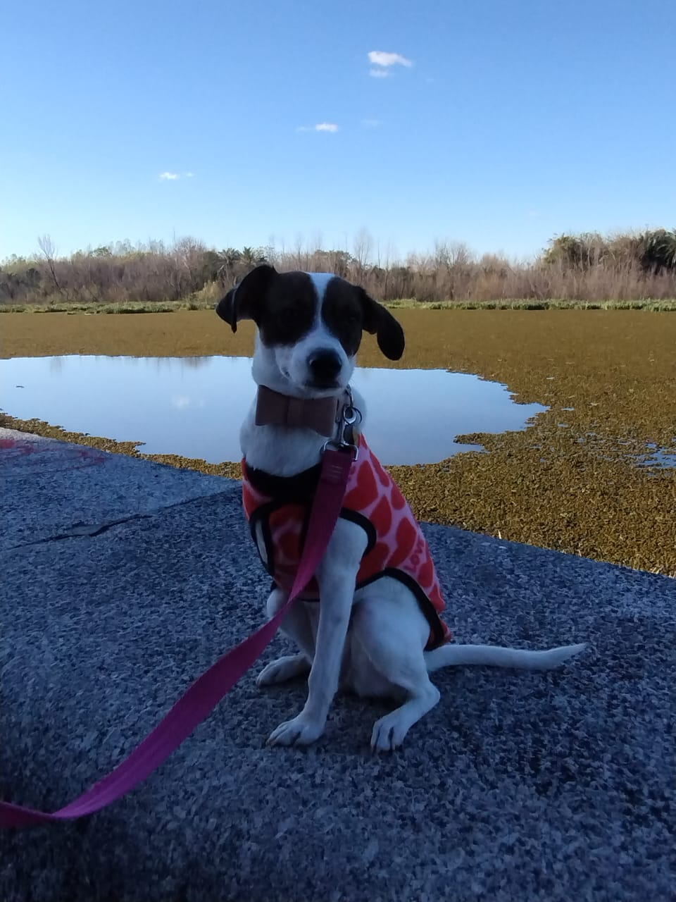

La vida de Lima
Lima, una perrita valiente y llena de vida, nació en la zona oeste de la provincia de Buenos Aires, en un entorno que no le ofreció las mejores condiciones. Desde sus primeros días, enfrentó dificultades y careció del cuidado adecuado, lo que resultó en la pérdida de una de sus patas delanteras. Sin embargo, su historia de resiliencia y coraje no terminó allí. Su vida dio un giro importante cuando fue rescatada por una organización dedicada a la protección animal, que la llevó a un nuevo hogar lleno de amor y cuidados.
La fortuna de Lima cambió radicalmente cuando fue adoptada por Cheño y el Panda, una pareja de gran corazón que le brindó una vida llena de cariño y atención. En su nuevo hogar, Lima floreció y mostró su carácter positivo y su alegría por la vida. Se adaptó rápidamente a su entorno y se convirtió en una compañera leal y afectuosa.

Una de las grandes pasiones de Lima es disfrutar de comidas con salsas. Cada vez que hay un plato delicioso a la vista, Lima se muestra emocionada y ansiosa por probarlo. Además, le encanta salir a pasear y jugar, especialmente con su amigo Falcon, con quien comparte momentos de diversión y exploración. Estos paseos son para Lima una fuente de alegría y una oportunidad para socializar con otros perros y personas.
A pesar de los desafíos que ha enfrentado, Lima ha desarrollado una ambición sorprendente: quiere convertirse en la jefa de gobierno. Su historia no solo inspira a quienes la rodean, sino que también deja una marca indeleble en la Ciudad Autónoma de Buenos Aires, donde su presencia y aspiraciones siguen creciendo.